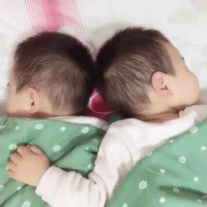

孖仔帮
公众号ID：twinsbang
关注
文|圆圈妈
网图|侵删
#先插播一则群通知#：第16期双胞胎跳蚤市场群已开放，公众号输入“赶集16”，扫码即可入群。
今天这篇有点鸡汤，因为感觉社群最近的氛围有点丧。孕育的担惊受怕，喂养的殚精竭虑，养育的操心操肺....
然而，这都不是什么大事，难的是双胞胎的非常教育。
大多数宝爸宝妈都表示双胞胎经常在家里争抢，打架，仿佛一天24小时，除了睡觉，其余时间都是在战火中，而且屡教不改，实在让人脑壳疼。
今天这篇就来聊聊双胞胎，这对特殊的手足关系。
1
人们总是喜欢把双胞胎之间的关系形容为敌对关系，包括我自己在内，最初也是这么认为的。
可不是嘛，你看呐...
他们还在娘肚里就为了抢位置时常拳打脚踢，于是...单胎妈妈的胎动，温风细雨润无声；双胎妈妈的胎动，乾坤大挪移。
出生后，为了抢吃抢喝抢玩大打出手，于是...单胎妈妈的日常，一手工作一手带娃，轻松惬意；双胎妈妈手脚并用，左右夹攻，依然狼狈不堪。
但是真正有双胞胎的爸爸妈妈会告诉你，双胞胎之间的关系，其实更多的是盟友关系。
他们从小就相互支持，相互保护，虽然也会斗嘴打架，抱怨彼此，但只要爸爸妈妈一生气，他们马上就会统一战线，一致对外，保护对方。
若是犯错挨批评，不受惩罚的孩子总是会为受惩罚的孩子求情，甚至甘愿一起受罚。他们似乎无师自通，很早就参透出什么叫有福同享有难同当。
这就是团结，就是感情，就是手足。
双胞胎，就是用灵魂交流的两个人。
他们之间微妙的亲密关系和相处模式，就好像...这地球村唯有他们俩才是本地人，自己人，其他人都是外太空的。
他们会互相伤害，但不影响他们相亲相爱。
就拿圆圈兄弟来说吧，平日里吵架打架的次数也不少，但很多时候他们也会彼此关爱，在有困难时会互相帮助，即使他们上一秒还在为争抢玩具拼个你死我活，也会在对方有需要的时候第一时间出现，嘴上还骂骂咧咧，但关切之意却肉眼可见。
我已经观察他们哥俩之间的关系6年多了，我所看到的，是幸福，是一种让内心充盈，精神饱满的东西，有伴一起长大何其幸运啊！
我甚至觉得，看着两人在吵嘴干架，有时候竟然也是件赏心悦目的事情。
心情好的时候，我会一边看一边纳了个闷：这两小家伙是如何做到，打是真的很用心在打，抢也是很认真地抢，但是爱护对方也是全心全意地爱。
从圆圆在圈圈的脸上咬出一个深深的牙印子，再到圈圈把圆圆推到墙角撞破后脑勺血流不止...我见识过太多双胞胎那些史诗般的吵架戏码和打斗场面了。
从当初的心疼气急把肇事者拎起来打小屁股，再到用衣架子打手掌心，再到现在的淡定自若，安抚复盘。
我承认，我的心已经佛到了天花板，不再做无谓的挣扎和纠结了。
他们俩每天的争抢打斗总是花样百出，唯一不变的是手足之情。
不管怎么打起来，依然能一笑泯千仇，过往不究；也不需要道歉，再多的言语都不如熊抱下对方更直接，然后一起玩耍，一起吃饭，一起睡觉...
两个当事人都无关痛痒，乐在其中，我一个外人着什么急，操什么心？
2
闲暇时，我会翻看他们俩小时候的照片，这是很治愈的片刻时光。
看他们，睡在一起相互拥抱，小手拉小手，一起画画，一起嬉戏，一起搞破坏...
我总是一边看一边不自觉地微笑...
港真，我有时好羡慕圆圈哥俩，他们俩兄弟好的时候，是真的好到糊了，焦了...好到让我这个老母亲都会吃醋，特别是他们互相捍卫对方时那股劲头...
就是...你若犯我兄弟，锱铢必较，睚眦必报，那种气场。
羡慕他们之间的默契，再冷的笑话，两人都能get到笑点，一起哈哈大笑。
羡慕他们之间的亲密，白天不管如何愤怒争吵，晚上都能互相拥抱，睡成一团。
羡慕他们之前的共情，你快乐，我能懂；你悲伤，我能察觉，互相安慰，互相鼓励。
羡慕他们，孩提时，有伴陪着玩耍；年少时，有伴陪着冒险，甚至...将来他们各自有了自己的小家庭，也有伴一起分担生活中那些酸甜苦辣咸。
一想到这，我就觉得好温暖，很有力量。
喂奶的日子，睡前的轻哼，摇篮的摇晃....养育双胞胎的艰辛终将随着孩子们的成长慢慢地弱化，而他们之间的手足之情却会一直伴随着，然后丰富和愉悦他们的整个童年。
看到他们一起成长，如此紧密相依，我倍感欣慰。我更加相信，同时养育一对双胞胎，比只抚养一个更容易，更有幸福感。
我和圆圈爸没有太多焦虑，对圆圈两兄弟的期望也不高，而他们哥俩对我们的要求也很少，那些过分无理的要求也从未提及过。
因为他们是被爱包围着长大的孩子。
除了有父母的爱，还有手足的爱，很多玩耍和陪伴的需求在他们自己的小圈子里就能够得到满足。
所以，双胞胎爸爸妈妈们，不管你是贫穷还是富有，在这件事情上，你绝对有底气大声对全世界炫耀：
“我送给孩子最好的礼物，那就是手足，一个将比任何人都了解他/她，全心全意爱他/她的人，这个手足千金难买，独一无二，还长得一模一样哦。”
3
最后，来看一段独生子女的内心独白，
我没有兄弟姐妹，是个独生女，
我非常渴望能有个伴儿，一个人的我，从来不用和别人分割自己的空间或者分享自己的玩具，但是我的空间太空荡了。
我在整个童年都想要个兄弟或者姐妹，比我小或者比我大，都可以，不管怎样，我都会很开心。
你是不是会更加坚信，哪怕两孩子打打杀杀，吵吵闹闹都好，成长路上不孤单，不寂寞，有伴儿一起玩，就是给孩子们这一生最好的礼物。
希望咱们双胞胎爸爸妈妈们都能调整心态，正确对待双胞胎之间相爱相杀那点事。
欣赏他们的相爱，也包容他们的相杀。
矛盾冲突是手足关系中的正常现象，但绝不是主要现象，既然如此，我们为什么要过分地关注双胞胎间那些相杀，却忽略了他们之间的默契，配合，同理心。
真的不能说，双胞胎的相互存在会夺走对方什么...相反，他们会给到彼此很多，甚至更多...比如满满的爱，再比如，多一个爱你和被你爱的人。
这种爱也就是我今天啰嗦了半天才终于说到的重点。就问你，GET到了吗？
双胞胎的教育迷思，你还有哪些困扰呢？欢迎来我们的双胞胎教育群一起探讨吧，有500多号双胞胎爸爸妈妈们在这里抱团取暖哦。
今日互动话题
#双胞胎的相爱相杀，哪些让你为之动容？#
评论区聊一聊呗！
微信公众号：孖仔帮
ID : twinsbang
专注双胞胎孕育，养育，教育经验分享
扫码关注我们
点一下你会更好看耶


